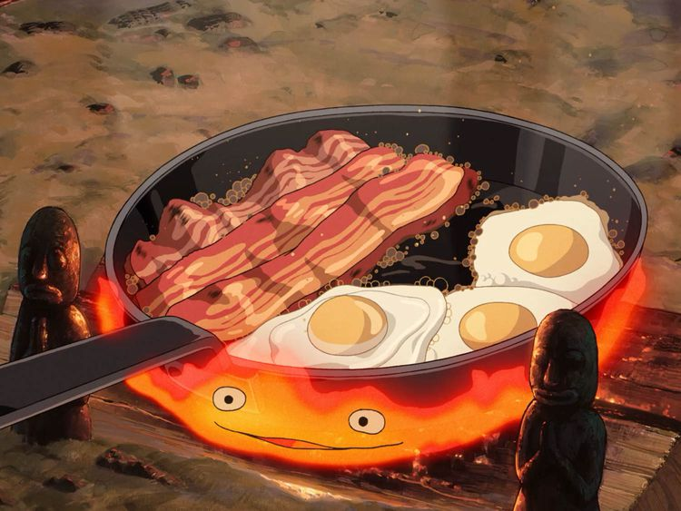

Calcifer's Breakfast

You just woke up and your stomach is growling. How about some nice bacon and eggs to start your
morning right. Here's everything you'll need to make this delicious breakfast and how to do it.
- 1 pack of bacon
- 2-4 eggs
- 2 tbsp of butter
- couple slices of bread
- Grab your pan, place on the stove and set heat to medium low.
- Once your pan has heated up, put 1 tbsp of butter onto your pan.
- When your butter has all melted nicely, place your strips of bacon, (however much you desire),
onto your pan.
- While your bacon is sizzling, crack as many eggs as you'd like in the area beside your bacon.
- When your eggs and bacon start to get golden, you may flip.
- And finally, when all golden, transfer your bacon and eggs to a clean plate, cut up
some bread and enjoy your breakfast. (Fire demon not included)